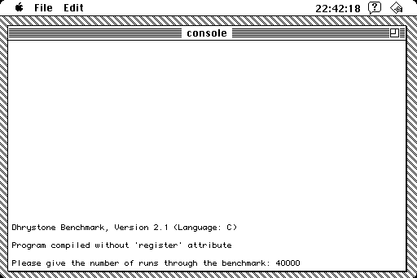
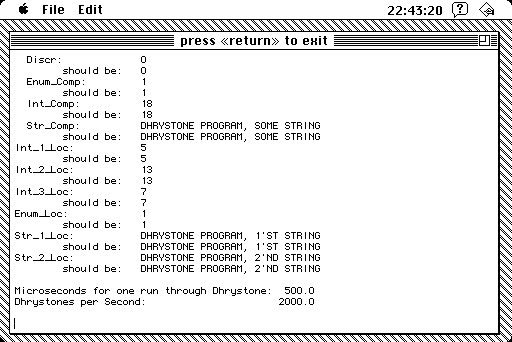

Some guy named Landon Rodgers asked me to build the Dhrystone benchmarker for 68k Macintosh, so I did. I built it with THINK C 5, using 4-byte ints (instead of the default 2-byte ones), and without global optimizations. I had to modify the source a little bit to get it to build and run properly. (The source code and project file is included in the download.)

When the application starts, it will ask you to enter a number of runs. You should select a fairly large value here. The faster the computer you have, the larger this value should be. The more accurate measurement you want, the larger this value should be. On a Macintosh Plus, it doesn't take too long to get through 20000 runs. On a faster computer, that same number of runs would happen too quickly relative to the resolution of the system clock, so a larger value should be used. The application will tell you when you have selected too small of a value.

After the runs have been completed, you'll either be asked to enter a larger number of runs or you'll be presented with the benchmark results.
I hope you find this program to be fun, if not somewhat useful.
The source code license of Dhrystone 68k is the same as Dhrystone C 2.1, which I was told is in the public domain.